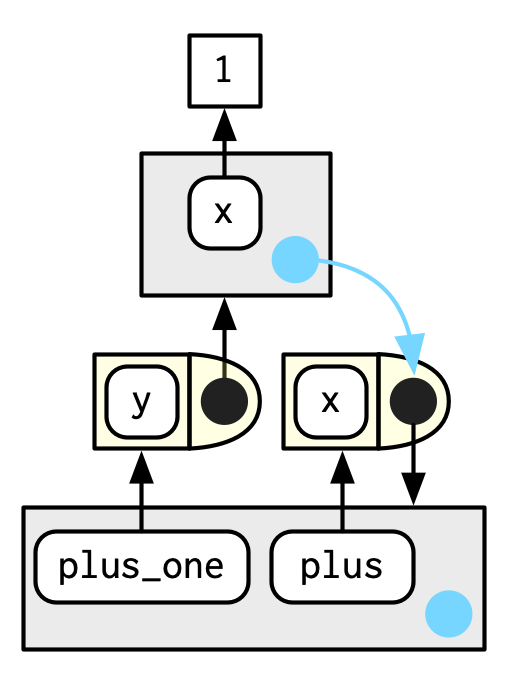

7 Environments
7.1 Introduction
The environment is the data structure that powers scoping. This chapter dives deep into environments, describing their structure in depth, and using them to improve your understanding of the four scoping rules described in Section 6.4. Understanding environments is not necessary for day-to-day use of R. But they are important to understand because they power many important R features like lexical scoping, namespaces, and R6 classes, and interact with evaluation to give you powerful tools for making domain specific languages, like dplyr and ggplot2.
Quiz
If you can answer the following questions correctly, you already know the most important topics in this chapter. You can find the answers at the end of the chapter in Section 7.7.
List at least three ways that an environment differs from a list.
What is the parent of the global environment? What is the only environment that doesnt have a parent?
What is the enclosing environment of a function? Why is it important?
How do you determine the environment from which a function was called?
How are
<-and<<-different?
Outline
Section 7.2 introduces you to the basic properties of an environment and shows you how to create your own.
Section 7.3 provides a function template for computing with environments, illustrating the idea with a useful function.
Section 7.4 describes environments used for special purposes: for packages, within functions, for namespaces, and for function execution.
Section 7.5 explains the last important environment: the caller environment. This requires you to learn about the call stack, that describes how a function was called. Youll have seen the call stack if youve ever called
traceback()to aid debugging.Section 7.6 briefly discusses three places where environments are useful data structures for solving other problems.
Prerequisites
This chapter will use rlang functions for working with environments, because it allows us to focus on the essence of environments, rather than the incidental details.
The env_ functions in rlang are designed to work with the pipe: all take an environment as the first argument, and many also return an environment. I wont use the pipe in this chapter in the interest of keeping the code as simple as possible, but you should consider it for your own code.
7.2 Environment basics
Generally, an environment is similar to a named list, with four important exceptions:
Every name must be unique.
The names in an environment are not ordered.
An environment has a parent.
Environments are not copied when modified.
Lets explore these ideas with code and pictures.
7.2.1 Basics
To create an environment, use rlang::env(). It works like list(), taking a set of name-value pairs:
Use new.env() to create a new environment. Ignore the hash and size parameters; they are not needed. You cannot simultaneously create and define values; use $<-, as shown below.
The job of an environment is to associate, or bind, a set of names to a set of values. You can think of an environment as a bag of names, with no implied order (i.e.it doesnt make sense to ask which is the first element in an environment). For that reason, well draw the environment as so:

As discussed in Section 2.5.2, environments have reference semantics: unlike most R objects, when you modify them, you modify them in place, and dont create a copy. One important implication is that environments can contain themselves.

Printing an environment just displays its memory address, which is not terribly useful:
Instead, well use env_print() which gives us a little more information:
env_print(e1)
#> <environment: 0x7fe5c3326d78>
#> parent: <environment: global>
#> bindings:
#> * a: <lgl>
#> * b: <chr>
#> * c: <dbl>
#> * d: <env>You can use env_names() to get a character vector giving the current bindings
In R 3.2.0 and greater, use names() to list the bindings in an environment. If your code needs to work with R 3.1.0 or earlier, use ls(), but note that youll need to set all.names = TRUE to show all bindings.
7.2.2 Important environments
Well talk in detail about special environments in 7.4, but for now we need to mention two. The current environment, or current_env() is the environment in which code is currently executing. When youre experimenting interactively, thats usually the global environment, or global_env(). The global environment is sometimes called your workspace, as its where all interactive (i.e.outside of a function) computation takes place.
To compare environments, you need to use identical() and not ==. This is because == is a vectorised operator, and environments are not vectors.
identical(global_env(), current_env())
#> [1] TRUE
global_env() == current_env()
#> Error in global_env() == current_env(): comparison (1) is possible only for
#> atomic and list typesAccess the global environment with globalenv() and the current environment with environment(). The global environment is printed as Rf_GlobalEnv and .GlobalEnv.
7.2.3 Parents
Every environment has a parent, another environment. In diagrams, the parent is shown as a small pale blue circle and arrow that points to another environment. The parent is whats used to implement lexical scoping: if a name is not found in an environment, then R will look in its parent (and so on). You can set the parent environment by supplying an unnamed argument to env(). If you dont supply it, it defaults to the current environment. In the code below, e2a is the parent of e2b.

To save space, I typically wont draw all the ancestors; just remember whenever you see a pale blue circle, theres a parent environment somewhere.
You can find the parent of an environment with env_parent():
Only one environment doesnt have a parent: the empty environment. I draw the empty environment with a hollow parent environment, and where space allows Ill label it with R_EmptyEnv, the name R uses.

The ancestors of every environment eventually terminate with the empty environment. You can see all ancestors with env_parents():
env_parents(e2b)
#> [[1]] <env: 0x7fe5c47e2310>
#> [[2]] $ <env: global>
env_parents(e2d)
#> [[1]] <env: 0x7fe5c7135f10>
#> [[2]] $ <env: empty>By default, env_parents() stops when it gets to the global environment. This is useful because the ancestors of the global environment include every attached package, which you can see if you override the default behaviour as below. Well come back to these environments in Section 7.4.1.
env_parents(e2b, last = empty_env())
#> [[1]] <env: 0x7fe5c47e2310>
#> [[2]] $ <env: global>
#> [[3]] $ <env: package:rlang>
#> [[4]] $ <env: package:stats>
#> [[5]] $ <env: package:graphics>
#> [[6]] $ <env: package:grDevices>
#> [[7]] $ <env: package:utils>
#> [[8]] $ <env: package:datasets>
#> [[9]] $ <env: package:methods>
#> [[10]] $ <env: Autoloads>
#> [[11]] $ <env: package:base>
#> [[12]] $ <env: empty>Use parent.env() to find the parent of an environment. No base function returns all ancestors.
7.2.4 Super assignment, <<-
The ancestors of an environment have an important relationship to <<-. Regular assignment, <-, always creates a variable in the current environment. Super assignment, <<-, never creates a variable in the current environment, but instead modifies an existing variable found in a parent environment.
If <<- doesnt find an existing variable, it will create one in the global environment. This is usually undesirable, because global variables introduce non-obvious dependencies between functions. <<- is most often used in conjunction with a function factory, as described in Section 10.2.4.
7.2.5 Getting and setting
You can get and set elements of an environment with $ and [[ in the same way as a list:
But you cant use [[ with numeric indices, and you cant use [:
e3[[1]]
#> Error in e3[[1]]: wrong arguments for subsetting an environment
e3[c("x", "y")]
#> Error in e3[c("x", "y")]: object of type 'environment' is not subsettable$ and [[ will return NULL if the binding doesnt exist. Use env_get() if you want an error:
If you want to use a default value if the binding doesnt exist, you can use the default argument.
There are two other ways to add bindings to an environment:
env_poke()30 takes a name (as string) and a value:env_bind()allows you to bind multiple values:
You can determine if an environment has a binding with env_has():
Unlike lists, setting an element to NULL does not remove it, because sometimes you want a name that refers to NULL. Instead, use env_unbind():
Unbinding a name doesnt delete the object. Thats the job of the garbage collector, which automatically removes objects with no names binding to them. This process is described in more detail in Section 2.6.
See get(), assign(), exists(), and rm(). These are designed interactively for use with the current environment, so working with other environments is a little clunky. Also beware the inherits argument: it defaults to TRUE meaning that the base equivalents will inspect the supplied environment and all its ancestors.
7.2.6 Advanced bindings
There are two more exotic variants of env_bind():
env_bind_lazy()creates delayed bindings, which are evaluated the first time they are accessed. Behind the scenes, delayed bindings create promises, so behave in the same way as function arguments.env_bind_lazy(current_env(), b = {Sys.sleep(1); 1}) system.time(print(b)) #> [1] 1 #> user system elapsed #> 0.00 0.00 1.01 system.time(print(b)) #> [1] 1 #> user system elapsed #> 0 0 0The primary use of delayed bindings is in
autoload(), which allows R packages to provide datasets that behave like they are loaded in memory, even though theyre only loaded from disk when needed.env_bind_active()creates active bindings which are re-computed every time theyre accessed:Active bindings are used to implement R6s active fields, which youll learn about in Section 14.3.2.
See ?delayedAssign() and ?makeActiveBinding().
7.2.7 Exercises
List three ways in which an environment differs from a list.
Create an environment as illustrated by this picture.

Create a pair of environments as illustrated by this picture.

Explain why
e[[1]]ande[c("a", "b")]dont make sense wheneis an environment.Create a version of
env_poke()that will only bind new names, never re-bind old names. Some programming languages only do this, and are known as single assignment languages.What does this function do? How does it differ from
<<-and why might you prefer it?rebind <- function(name, value, env = caller_env()) { if (identical(env, empty_env())) { stop("Can't find `", name, "`", call. = FALSE) } else if (env_has(env, name)) { env_poke(env, name, value) } else { rebind(name, value, env_parent(env)) } } rebind("a", 10) #> Error: Can't find `a` a <- 5 rebind("a", 10) a #> [1] 10
7.3 Recursing over environments
If you want to operate on every ancestor of an environment, its often convenient to write a recursive function. This section shows you how, applying your new knowledge of environments to write a function that given a name, finds the environment where() that name is defined, using Rs regular scoping rules.
The definition of where() is straightforward. It has two arguments: the name to look for (as a string), and the environment in which to start the search. (Well learn why caller_env() is a good default in Section 7.5.)
where <- function(name, env = caller_env()) {
if (identical(env, empty_env())) {
# Base case
stop("Can't find ", name, call. = FALSE)
} else if (env_has(env, name)) {
# Success case
env
} else {
# Recursive case
where(name, env_parent(env))
}
}There are three cases:
The base case: weve reached the empty environment and havent found the binding. We cant go any further, so we throw an error.
The successful case: the name exists in this environment, so we return the environment.
The recursive case: the name was not found in this environment, so try the parent.
These three cases are illustrated with these three examples:
where("yyy")
#> Error: Can't find yyy
x <- 5
where("x")
#> <environment: R_GlobalEnv>
where("mean")
#> <environment: base>It might help to see a picture. Imagine you have two environments, as in the following code and diagram:

where("a", e4b)will findaine4b.where("b", e4b)doesnt findbine4b, so it looks in its parent,e4a, and finds it there.where("c", e4b)looks ine4b, thene4a, then hits the empty environment and throws an error.
Its natural to work with environments recursively, so where() provides a useful template. Removing the specifics of where() shows the structure more clearly:
f <- function(..., env = caller_env()) {
if (identical(env, empty_env())) {
# base case
} else if (success) {
# success case
} else {
# recursive case
f(..., env = env_parent(env))
}
}7.3.1 Exercises
Modify
where()to return all environments that contain a binding forname. Carefully think through what type of object the function will need to return.Write a function called
fget()that finds only function objects. It should have two arguments,nameandenv, and should obey the regular scoping rules for functions: if theres an object with a matching name thats not a function, look in the parent. For an added challenge, also add aninheritsargument which controls whether the function recurses up the parents or only looks in one environment.
7.4 Special environments
Most environments are not created by you (e.g.with env()) but are instead created by R. In this section, youll learn about the most important environments, starting with the package environments. Youll then learn about the function environment bound to the function when it is created, and the (usually) ephemeral execution environment created every time the function is called. Finally, youll see how the package and function environments interact to support namespaces, which ensure that a package always behaves the same way, regardless of what other packages the user has loaded.
7.4.1 Package environments and the search path
Each package attached by library() or require() becomes one of the parents of the global environment. The immediate parent of the global environment is the last package you attached31, the parent of that package is the second to last package you attached,

If you follow all the parents back, you see the order in which every package has been attached. This is known as the search path because all objects in these environments can be found from the top-level interactive workspace. You can see the names of these environments with base::search(), or the environments themselves with rlang::search_envs():
search()
#> [1] ".GlobalEnv" "package:rlang" "package:stats"
#> [4] "package:graphics" "package:grDevices" "package:utils"
#> [7] "package:datasets" "package:methods" "Autoloads"
#> [10] "package:base"
search_envs()
#> [[1]] $ <env: global>
#> [[2]] $ <env: package:rlang>
#> [[3]] $ <env: package:stats>
#> [[4]] $ <env: package:graphics>
#> [[5]] $ <env: package:grDevices>
#> [[6]] $ <env: package:utils>
#> [[7]] $ <env: package:datasets>
#> [[8]] $ <env: package:methods>
#> [[9]] $ <env: Autoloads>
#> [[10]] $ <env: package:base>The last two environments on the search path are always the same:
The
Autoloadsenvironment uses delayed bindings to save memory by only loading package objects (like big datasets) when needed.The base environment,
package:baseor sometimes justbase, is the environment of the base package. It is special because it has to be able to bootstrap the loading of all other packages. You can access it directly withbase_env().
Note that when you attach another package with library(), the parent environment of the global environment changes:

7.4.2 The function environment
A function binds the current environment when it is created. This is called the function environment, and is used for lexical scoping. Across computer languages, functions that capture (or enclose) their environments are called closures, which is why this term is often used interchangeably with function in Rs documentation.
You can get the function environment with fn_env():
Use environment(f) to access the environment of function f.
In diagrams, Ill draw a function as a rectangle with a rounded end that binds an environment.

In this case, f() binds the environment that binds the name f to the function. But thats not always the case: in the following example g is bound in a new environment e, but g() binds the global environment. The distinction between binding and being bound by is subtle but important; the difference is how we find g versus how g finds its variables.

7.4.3 Namespaces
In the diagram above, you saw that the parent environment of a package varies based on what other packages have been loaded. This seems worrying: doesnt that mean that the package will find different functions if packages are loaded in a different order? The goal of namespaces is to make sure that this does not happen, and that every package works the same way regardless of what packages are attached by the user.
For example, take sd():
sd
#> function (x, na.rm = FALSE)
#> sqrt(var(if (is.vector(x) || is.factor(x)) x else as.double(x),
#> na.rm = na.rm))
#> <bytecode: 0x7fe5c3730500>
#> <environment: namespace:stats>sd() is defined in terms of var(), so you might worry that the result of sd() would be affected by any function called var() either in the global environment, or in one of the other attached packages. R avoids this problem by taking advantage of the function versus binding environment described above. Every function in a package is associated with a pair of environments: the package environment, which you learned about earlier, and the namespace environment.
The package environment is the external interface to the package. Its how you, the R user, find a function in an attached package or with
::. Its parent is determined by search path, i.e.the order in which packages have been attached.The namespace environment is the internal interface to the package. The package environment controls how we find the function; the namespace controls how the function finds its variables.
Every binding in the package environment is also found in the namespace environment; this ensures every function can use every other function in the package. But some bindings only occur in the namespace environment. These are known as internal or non-exported objects, which make it possible to hide internal implementation details from the user.

Every namespace environment has the same set of ancestors:
Each namespace has an imports environment that contains bindings to all the functions used by the package. The imports environment is controlled by the package developer with the
NAMESPACEfile.Explicitly importing every base function would be tiresome, so the parent of the imports environment is the base namespace. The base namespace contains the same bindings as the base environment, but it has a different parent.
The parent of the base namespace is the global environment. This means that if a binding isnt defined in the imports environment the package will look for it in the usual way. This is usually a bad idea (because it makes code depend on other loaded packages), so
R CMD checkautomatically warns about such code. It is needed primarily for historical reasons, particularly due to how S3 method dispatch works.

Putting all these diagrams together we get:

So when sd() looks for the value of var it always finds it in a sequence of environments determined by the package developer, but not by the package user. This ensures that package code always works the same way regardless of what packages have been attached by the user.
Theres no direct link between the package and namespace environments; the link is defined by the function environments.
7.4.4 Execution environments
The last important topic we need to cover is the execution environment. What will the following function return the first time its run? What about the second?
g <- function(x) {
if (!env_has(current_env(), "a")) {
message("Defining a")
a <- 1
} else {
a <- a + 1
}
a
}Think about it for a moment before you read on.
This function returns the same value every time because of the fresh start principle, described in Section 6.4.3. Each time a function is called, a new environment is created to host execution. This is called the execution environment, and its parent is the function environment. Lets illustrate that process with a simpler function. Figure 7.1 illustrates the graphical conventions: I draw execution environments with an indirect parent; the parent environment is found via the function environment.

Figure 7.1: The execution environment of a simple function call. Note that the parent of the execution environment is the function environment.
An execution environment is usually ephemeral; once the function has completed, the environment will be garbage collected. There are several ways to make it stay around for longer. The first is to explicitly return it:
h2 <- function(x) {
a <- x * 2
current_env()
}
e <- h2(x = 10)
env_print(e)
#> <environment: 0x7fe5c54fc860>
#> parent: <environment: global>
#> bindings:
#> * a: <dbl>
#> * x: <dbl>
fn_env(h2)
#> <environment: R_GlobalEnv>Another way to capture it is to return an object with a binding to that environment, like a function. The following example illustrates that idea with a function factory, plus(). We use that factory to create a function called plus_one().
Theres a lot going on in the diagram because the enclosing environment of plus_one() is the execution environment of plus().
plus <- function(x) {
function(y) x + y
}
plus_one <- plus(1)
plus_one
#> function(y) x + y
#> <environment: 0x7fe5c75ed6c8>
What happens when we call plus_one()? Its execution environment will have the captured execution environment of plus() as its parent:

Youll learn more about function factories in Section 10.2.
7.4.5 Exercises
How is
search_envs()different fromenv_parents(global_env())?Draw a diagram that shows the enclosing environments of this function:
Write an enhanced version of
str()that provides more information about functions. Show where the function was found and what environment it was defined in.
7.5 Call stacks
There is one last environment we need to explain, the caller environment, accessed with rlang::caller_env(). This provides the environment from which the function was called, and hence varies based on how the function is called, not how the function was created. As we saw above this is a useful default whenever you write a function that takes an environment as an argument.
parent.frame() is equivalent to caller_env(); just note that it returns an environment, not a frame.
To fully understand the caller environment we need to discuss two related concepts: the call stack, which is made up of frames. Executing a function creates two types of context. Youve learned about one already: the execution environment is a child of the function environment, which is determined by where the function was created. Theres another type of context created by where the function was called: this is called the call stack.
7.5.1 Simple call stacks
Lets illustrate this with a simple sequence of calls: f() calls g() calls h().
The way you most commonly see a call stack in R is by looking at the traceback() after an error has occurred:
Instead of stop() + traceback() to understand the call stack, were going to use lobstr::cst() to print out the call stack tree:
This shows us that cst() was called from h(), which was called from g(), which was called from f(). Note that the order is the opposite from traceback(). As the call stacks get more complicated, I think its easier to understand the sequence of calls if you start from the beginning, rather than the end (i.e. f() calls g(); rather than g() was called by f()).
7.5.2 Lazy evaluation
The call stack above is simple: while you get a hint that theres some tree-like structure involved, everything happens on a single branch. This is typical of a call stack when all arguments are eagerly evaluated.
Lets create a more complicated example that involves some lazy evaluation. Well create a sequence of functions, a(), b(), c(), that pass along an argument x.
a <- function(x) b(x)
b <- function(x) c(x)
c <- function(x) x
a(f())
#>
#> a(f())
#> b(x)
#> c(x)
#> f()
#> g(x = 2)
#> h(x = 3)
#> lobstr::cst()x is lazily evaluated so this tree gets two branches. In the first branch a() calls b(), then b() calls c(). The second branch starts when c() evaluates its argument x. This argument is evaluated in a new branch because the environment in which it is evaluated is the global environment, not the environment of c().
7.5.3 Frames
Each element of the call stack is a frame32, also known as an evaluation context. The frame is an extremely important internal data structure, and R code can only access a small part of the data structure because tampering with it will break R. A frame has three key components:
An expression (labelled with
expr) giving the function call. This is whattraceback()prints out.An environment (labelled with
env), which is typically the execution environment of a function. There are two main exceptions: the environment of the global frame is the global environment, and callingeval()also generates frames, where the environment can be anything.A parent, the previous call in the call stack (shown by a grey arrow).
Figure 7.2 illustrates the stack for the call to f(x = 1) shown in Section 7.5.1.

Figure 7.2: The graphical depiction of a simple call stack
(To focus on the calling environments, I have omitted the bindings in the global environment from f, g, and h to the respective function objects.)
The frame also holds exit handlers created with on.exit(), restarts and handlers for the condition system, and which context to return() to when a function completes. These are important internal details that are not accessible with R code.
7.5.4 Dynamic scope
Looking up variables in the calling stack rather than in the enclosing environment is called dynamic scoping. Few languages implement dynamic scoping (Emacs Lisp is a notable exception.) This is because dynamic scoping makes it much harder to reason about how a function operates: not only do you need to know how it was defined, you also need to know the context in which it was called. Dynamic scoping is primarily useful for developing functions that aid interactive data analysis, and one of the topics discussed in Chapter 20.
7.5.5 Exercises
- Write a function that lists all the variables defined in the environment
in which it was called. It should return the same results as
ls().
7.6 As data structures
As well as powering scoping, environments are also useful data structures in their own right because they have reference semantics. There are three common problems that they can help solve:
Avoiding copies of large data. Since environments have reference semantics, youll never accidentally create a copy. But bare environments are painful to work with, so instead I recommend using R6 objects, which are built on top of environments. Learn more in Chapter 14.
Managing state within a package. Explicit environments are useful in packages because they allow you to maintain state across function calls. Normally, objects in a package are locked, so you cant modify them directly. Instead, you can do something like this:
my_env <- new.env(parent = emptyenv()) my_env$a <- 1 get_a <- function() { my_env$a } set_a <- function(value) { old <- my_env$a my_env$a <- value invisible(old) }Returning the old value from setter functions is a good pattern because it makes it easier to reset the previous value in conjunction with
on.exit()(Section 6.7.4).As a hashmap. A hashmap is a data structure that takes constant, O(1), time to find an object based on its name. Environments provide this behaviour by default, so can be used to simulate a hashmap. See the hash package (Brown 2013) for a complete development of this idea.
7.7 Quiz answers
There are four ways: every object in an environment must have a name; order doesnt matter; environments have parents; environments have reference semantics.
The parent of the global environment is the last package that you loaded. The only environment that doesnt have a parent is the empty environment.
The enclosing environment of a function is the environment where it was created. It determines where a function looks for variables.
Use
caller_env()orparent.frame().<-always creates a binding in the current environment;<<-rebinds an existing name in a parent of the current environment.
References
Brown, Christopher. 2013. Hash: Full Feature Implementation of Hash/Associated Arrays/Dictionaries. https://CRAN.R-project.org/package=hash.
You might wonder why rlang has
env_poke()instead ofenv_set(). This is for consistency:_set()functions return a modified copy;_poke()functions modify in place.Note the difference between attached and loaded. A package is loaded automatically if you access one of its functions using
::; it is only attached to the search path bylibrary()orrequire().NB:
?environmentuses frame in a different sense: Environments consist of a frame, or collection of named objects, and a pointer to an enclosing environment. We avoid this sense of frame, which comes from S, because its very specific and not widely used in base R. For example, the frame inparent.frame()is an execution context, not a collection of named objects.